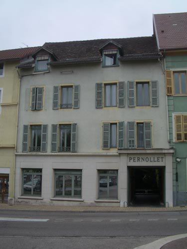
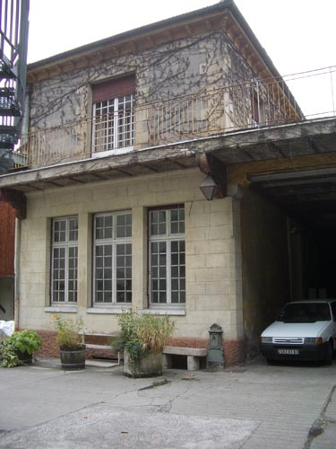

| Pernollet Hotel | ||
|
there is one last thing to do before the bus comes - we have to see what is left of the Pernollet Hotel - where Gertrude and Alice stayed before they moved into the house at Billignin  as I said - the Pernollet is now an old peoples' home - and has been somewhat rebuilt - but you can go through the passageway and see what must have been the garage of the hotel - here ... lost generation ...  that's it - Belley is done - depending on how much time you have before the bus arrives you can wander down past the tourist office again and see the home of Brillat Savarin <image of the kids at the bustop> the bus will depart from the same stop you arrived at - you can wait with the young people who know nothing of what you have been doing - board the bus and return to Chambray |
||